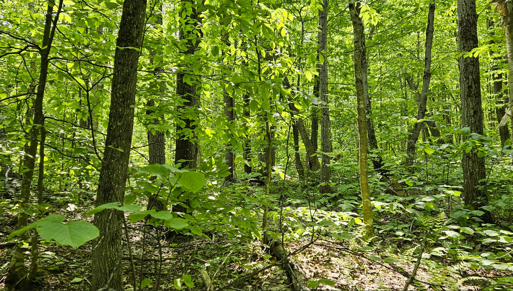

📸 Gallery

12 km from Knowlton, 30 min from Magog, 60 min from Sutton and ski resorts. Year-round access via Montée Baker Pond.
12.8 ha lot with approx. 145 m of frontage, zoned rural and buildable according to the 2025 municipal plan.
For more details, email me.